Good morning, friends! Close your eyes and imagine a computer with no pictures, no colours and no mouse. Strange, right?
Today I will tell you the story of a magic helper that made computers easy for everyone. Its name is Microsoft Windows!
The helper that makes computers easy! 😊
By: ____________ · Class 4
Good morning, friends! Close your eyes and imagine a computer with no pictures, no colours and no mouse. Strange, right?
Today I will tell you the story of a magic helper that made computers easy for everyone. Its name is Microsoft Windows!
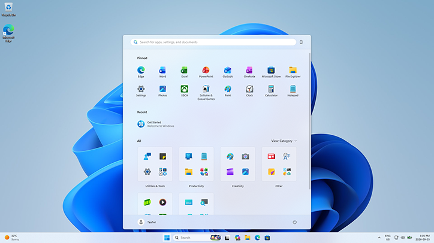
In our school, the teacher keeps everything in order. Inside a computer, Windows does the same job.
When we click on something, Windows tells the computer what to do. A helper like this is called an Operating System.
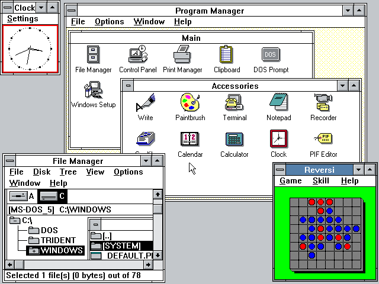
Each box is a window — just like the windows in our house!
Why is it called “Windows”? When we open Paint, it opens in a box. When we open the calculator, it opens in another box.
Each box is called a window — just like the windows in our house!
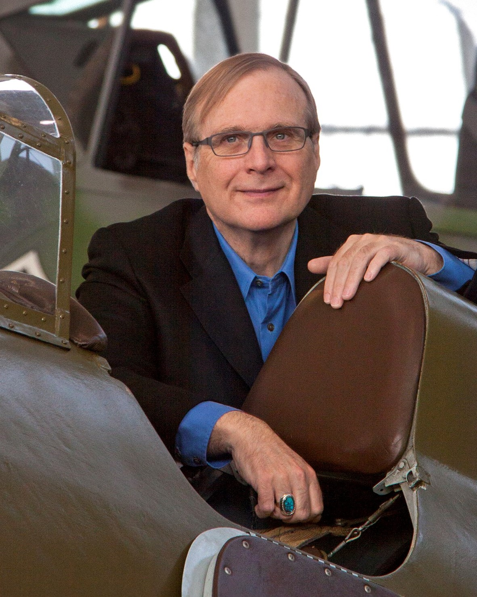
Two school friends started Microsoft in 1975
Long ago, in 1975, two school friends in America — Bill Gates and Paul Allen — loved computers very much.
They started a company called Microsoft. Later, Microsoft made Windows.
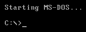
C:\> type secret words to do anything_
❌ No pictures ❌ No mouse
But before Windows, computers had only a black screen. There were no pictures and no mouse.
People had to type secret words to make the computer work. One small spelling mistake, and — oops — it would not work!
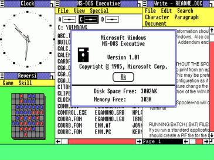
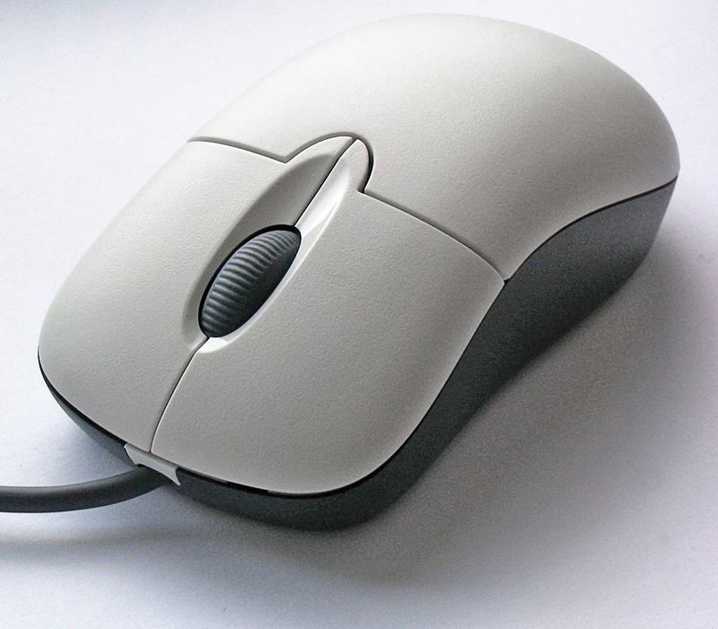
Pictures + clicking = easy! 👆✨
Then, in 1985, the very first Windows was born — Happy birthday, Windows!
Now people could see pictures and click with a mouse. Computers became much easier.
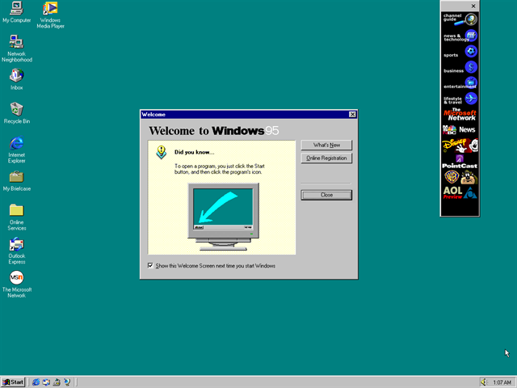
The famous ⊞ Start button was born!
Ten years later came Windows 95. It gave us the famous Start button.
People were so excited that they stood in long lines at midnight to buy it!
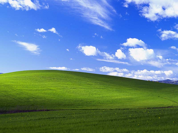
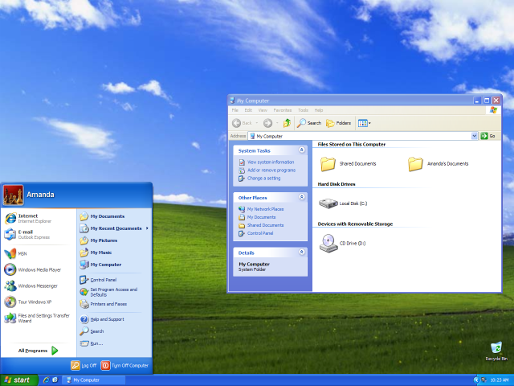
🌄 One of the most seen photos in the world!
In 2001 came Windows XP. Have you seen this green hill picture? It is a real photo taken in America.
It is called “Bliss”, and millions of people saw it on their computers every day!
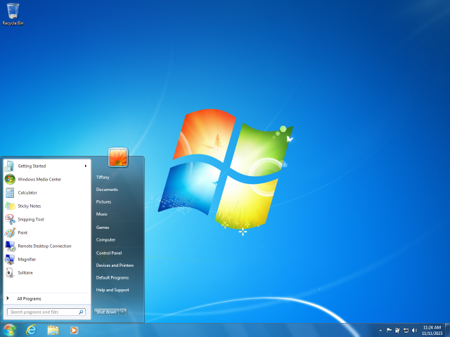
⚡ Fast 😊 Simple ❤️ Loved by everyone
In 2009 came Windows 7. It was fast and simple.
People loved it so much that many families used it for more than ten years!
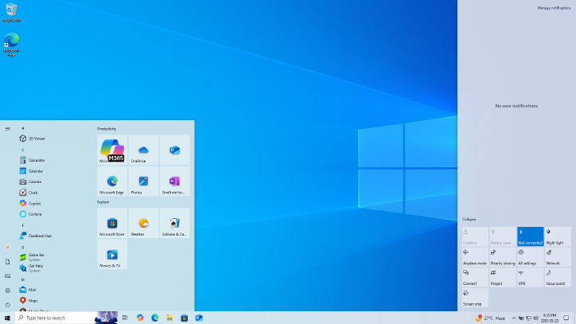
🎁 Free for many people 🤔 Where is Windows 9? It was skipped!
In 2015 came Windows 10. Many people got it for free!
But wait — did you notice something funny? There was no Windows 9! Microsoft jumped straight from 8 to 10.
🎯 Start button in the middle 🔵 Round corners 🤖 A helper you can talk to
Today, many of us use Windows 11. The Start button now sits in the middle, and the corners are round and soft.
It even has a helper called Copilot that you can ask questions!
From black-and-white boxes 👉 to beautiful screens ✨
See how Windows grew up, just like us! It started as simple black-and-white boxes in 1985.
Every few years it became faster and more beautiful — 95, XP, 7, 10 and now 11.
Let me show you the parts of the Windows screen. The big background is the desktop.
The little pictures are icons — click them to open apps. The strip at the bottom is the taskbar.
Here is a secret trick! If you make a mistake, press Ctrl and Z together — the mistake disappears!
Ctrl + C copies something and Ctrl + V pastes it. Try it at home!
Now, a small quiz! Raise your hand if you know.
1. Who started Microsoft? (Bill Gates and Paul Allen)
2. Which Windows gave us the Start button? (Windows 95)
3. What is the green hill picture called? (Bliss)
Draw in Paint
Do homework
Play games
Learn online
🌍 More than 1 billion computers use Windows!
With Windows we can draw, do homework, play games and learn new things. More than one billion computers use Windows!
So next time you click on a computer, remember the magic helper inside it. Thank you!
40 years of the world's favourite computer helper
1985 → todayBy: ____________ · Class 4
Good morning, everyone! Raise your hand if you have used a computer. Almost all of you!
Most of those computers have a hidden helper inside them. Today I will tell you its story — the story of Microsoft Windows: what it is, who made it, and how it changed over 40 years.
The OS is the middle-man: it passes our wishes to the machine.
Think of a computer like a layered cake. At the top is you. Below you are the apps, like Paint or games. At the bottom is the hardware — the screen, keyboard and chips.
And in the middle sits Windows. When I click on Paint, I don't talk to the computer chip directly — Windows passes my message along. That's why it's called an Operating System, or OS.
Files
keeps every file in the right folderMemory
shares the computer's memory between appsDevices
talks to the mouse, printer, speakersSafety
passwords and virus protectionWindows is like a very busy manager with four big jobs.
One — it keeps our files in the right folders. Two — it shares the computer's memory between apps. Three — it talks to devices like the printer and speakers. And four — it keeps us safe with passwords and virus protection.
Graphical User Interface
Windows shows us pictures instead of making us type. This is called a GUI — a Graphical User Interface.
Little pictures are called icons, and every app opens in its own box called a window. That is where the name “Windows” comes from!
Our story begins in 1975 with two school friends from Seattle, America — Bill Gates and Paul Allen. They loved computers more than anything.
They started a company and joined two words to name it: micro-computer + software = Microsoft. Today it is one of the biggest companies on Earth!
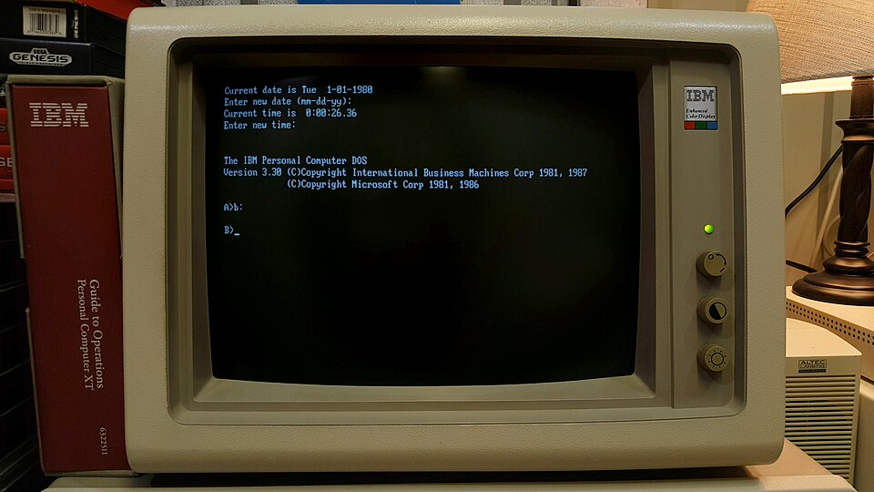
C:\> DIR ← show files
C:\> CD GAMES ← open folder
C:\> _▌
Every job needed a typed command.
One spelling mistake = ❌ error!
But before Windows, computers used something called MS-DOS. The screen was black, and there was no mouse.
To see your files, you had to type DIR. To open a folder, you typed CD and its name. One spelling mistake, and you got an error! Only experts could use computers.
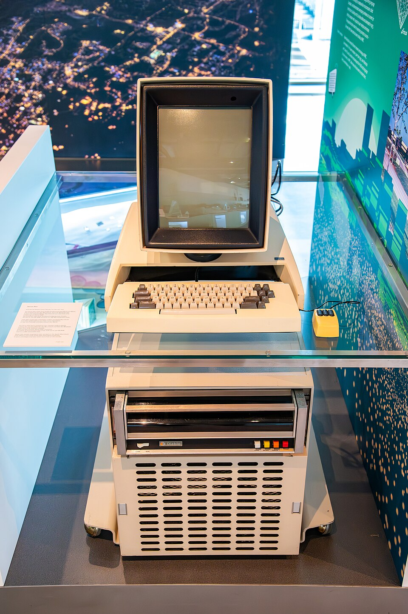
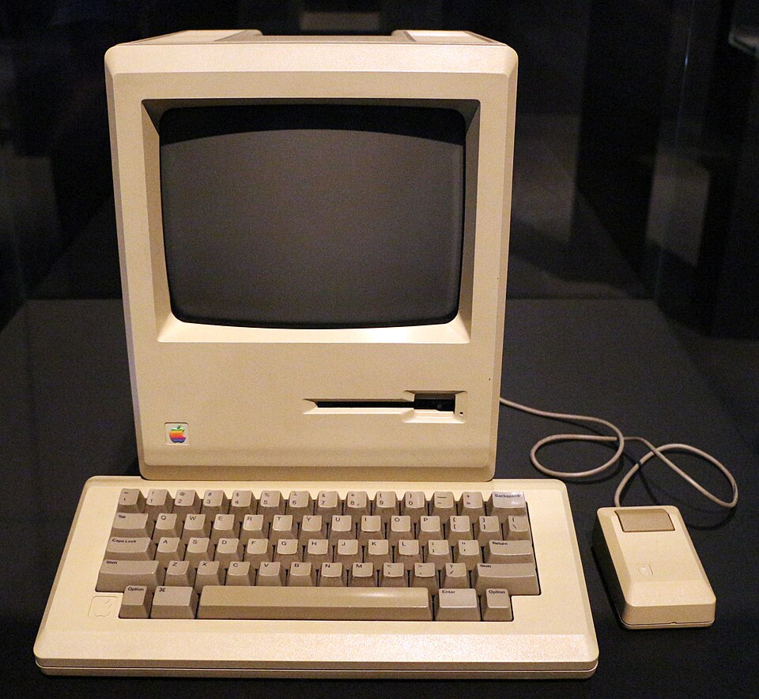
Scientists at Xerox invented windows + mouse. Apple made it popular. Microsoft brought it to millions of PCs.
So who had the idea of pictures and a mouse? It was scientists at a company called Xerox, back in 1973.
Then Apple made it famous with the Macintosh in 1984. Just one year later, Microsoft brought the same idea to millions of computers with Windows.
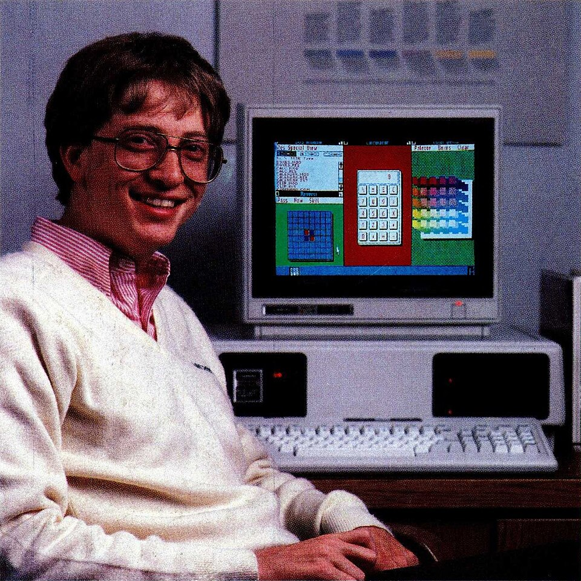
😮 Windows could not overlap — they sat side by side, like tiles on a floor.
And so, in 1985, Windows 1.0 was born! Here is a young Bill Gates showing it.
But it was very simple. The windows could not sit on top of each other — they were placed side by side, like tiles on a floor.
Paint
still in Windows 11!Notepad
still in Windows 11!Calculator
still in Windows 11!Clock
still in Windows 11!All of these came with Windows 1.0 in 1985 — and we still use them today.
Here is something amazing. Windows 1.0 came with Paint, Notepad, a Calculator and a Clock.
These apps are more than 40 years old — older than many of our parents — and they are still inside Windows 11 today!
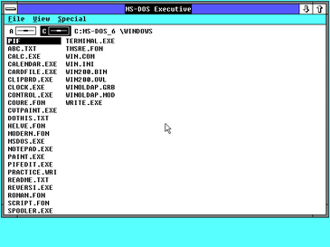
Two years later, Windows 2.0 let windows finally overlap, one on top of another.
But Apple was angry! They said Windows looked too much like their Mac, and took Microsoft to court. After many years, the court decided Microsoft had done nothing wrong.
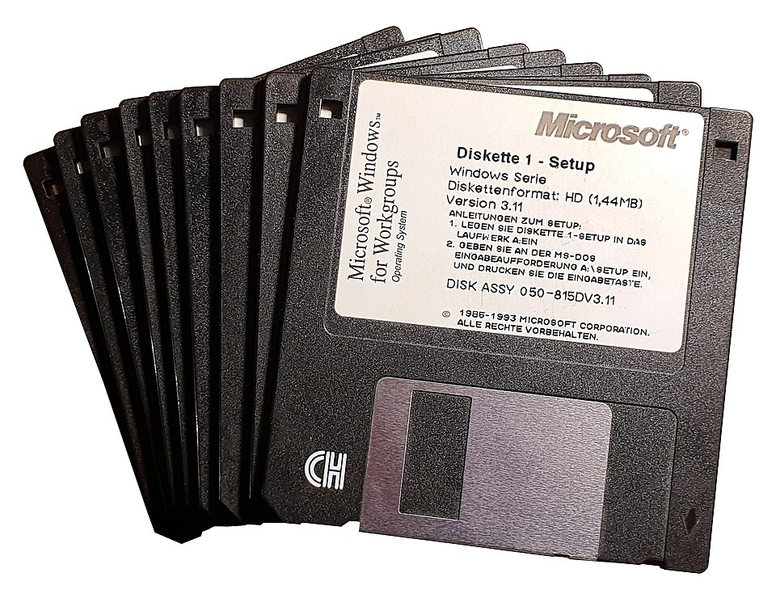
🃏 The Solitaire card game was added to teach people how to drag with a mouse!
In 1990 came Windows 3, and it became a huge hit. It came on a pile of floppy disks — nine of them for one version!
Fun fact: the card game Solitaire was added on purpose — to help people practise dragging with the mouse. Learning while playing!
Then came the most exciting moment — Windows 95! It gave us the Start button and the taskbar, which we still use today.
People were so excited that they stood in long lines at midnight just to buy it, like fans waiting for a new movie!
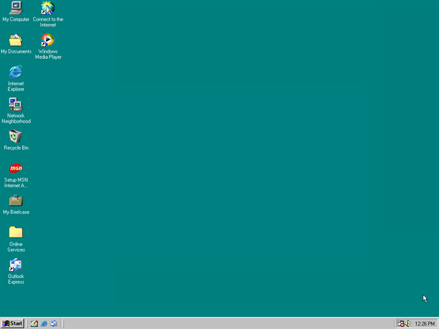
Around this time, something new arrived — the internet! Windows 98 came with a web browser called Internet Explorer built in.
For the first time, many families could send emails and visit websites from home.
📸 The green hill is a real photo. XP was used for over 12 years!
In 2001 came Windows XP — XP stands for “eXPerience”. Do you know this green hill?
It is a real photo called “Bliss”, taken in California in 1996. People loved XP so much that they kept using it for more than 12 years!
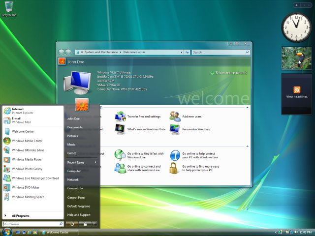
But not every Windows was a success. Windows Vista, in 2007, looked beautiful — like shiny glass.
The problem? It was slow on many computers, like a tortoise. Many people were unhappy.
Microsoft listened to people and made Windows 7 in 2009. It was fast and simple again.
You could pin your favourite apps to the taskbar. It became one of the most loved Windows ever.
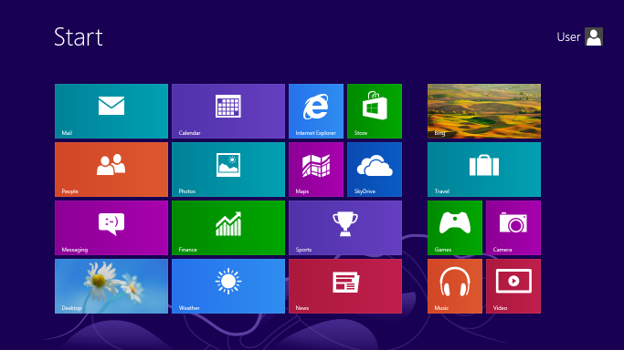
Then tablets and touch screens became popular. So Windows 8, in 2012, was full of big colourful tiles to touch.
But guess what — the Start button disappeared! People complained so much that Microsoft brought it back in Windows 8.1.
In 2015 came Windows 10, mixing the best of 7 and 8. Many people got it for free!
But wait — did you notice? There was never a Windows 9! Microsoft jumped straight from 8 to 10 to show it was a big step forward.
And today we have Windows 11, from 2021. The Start button moved to the middle and all the corners are round.
It even has an AI helper called Copilot that can answer questions — just like talking to a smart friend!
Now let's look at the Windows screen. The background is the desktop. The small pictures are icons. An open app is a window.
At the bottom is the taskbar with the Start button, and in the corner, the clock and notifications.
Want to be a computer wizard? Learn these shortcuts! Ctrl + Z undoes a mistake. Ctrl + C and Ctrl + V copy and paste.
Alt + Tab jumps between apps, Windows key + D shows the desktop, and Windows key + L locks the computer when you walk away.
Update
updates fix weak spotsAntivirus
Windows Security is built inStrong password
long and secretAsk first
before downloading anythingComputers can catch “illnesses” too — they are called viruses. Windows has a built-in guard called Windows Security.
To stay safe: keep Windows updated, use a strong password, and always ask a grown-up before downloading anything.
Windows
Microsoft · most PCsmacOS
Apple · Mac computersLinux
free · big serversAndroid / iOS
phones & tabletsThey are all operating systems — just made by different companies.
Windows is not the only operating system — it has cousins! Apple computers use macOS. Linux is free and runs many big servers. Phones use Android or iOS.
They all do the same job — managing the computer — but Windows is on about 7 out of 10 laptops and desktops.
Let's see who was listening! Quiz time:
1. Who started Microsoft? (Bill Gates and Paul Allen)
2. What does GUI stand for? (Graphical User Interface)
3. Which Windows gave us the Start button? (Windows 95)
4. What is the green hill picture called? (Bliss)
5. Which Windows number was skipped? (9)
1 billion+
computers use Windows7 out of 10
laptops & desktops run Windows40 years
since Windows 1.0 (1985)No “9”
it jumped from 8 to 10So that's the story of Windows! From a black screen with typed commands, to a friendly helper on more than one billion computers — 40 years of changes.
And it all started with two school friends who loved computers. Maybe one of us will build the next big thing! Thank you for listening. Any questions?
How an Operating System works, and how it changed the world
Kernels · GUIs · 40 years of historyBy: ____________ · Class 4
Good morning, everyone! Every time you click on a computer, thousands of tiny things happen in less than a blink of an eye. Who makes all of that happen?
Today I will open up the computer and show you its secret manager — Microsoft Windows. I'll explain how it works inside, and tell you its 40-year story, full of big ideas, mistakes and comebacks.
An operating system is the software that manages the hardware and lets every other program run on it.
Apps never touch the hardware directly — they ask the kernel.
An operating system is the software that manages all the hardware and lets other programs run. It is built in layers, like a building.
At the bottom is the hardware — the processor, memory and disk. Above it are drivers, which translate for each device. In the centre is the kernel, the brain that controls everything. On top is the shell we see — the desktop and Start menu — and then our apps. Apps never touch the hardware directly; they always ask the kernel.
| Job | What it means | It's like… |
|---|---|---|
| ⏱️ Process management | Decides which program uses the CPU and when | A teacher choosing who speaks next |
| 🧠 Memory management | Gives each program its own part of RAM | Giving each student their own desk |
| 📂 File system | Stores files in folders on the disk | A library catalogue |
| 🔌 Device management | Talks to printers, keyboards, Wi-Fi using drivers | An interpreter for each language |
| 🔒 Security | User accounts, passwords, permissions, antivirus | The school security guard |
Every operating system has five main jobs. Let me compare them to our school.
Process management is like a teacher choosing who speaks next. Memory management is like giving every student their own desk. The file system is like the library catalogue. Device management is like having an interpreter for every language. And security is the school's security guard.
A CPU core can really do one thing at a time. The OS switches between apps very fast:
Each turn is a time slice of a few milliseconds — so fast it feels like everything runs together.
Modern computers also have several cores, so a few apps truly run at the same moment.
Here is a puzzle: I can play music, draw in Paint and browse the internet at the same time. But one processor core can only do one thing at a time! How?
The answer is time slicing. Windows gives each app a tiny turn — just a few milliseconds — then switches to the next, again and again. It's so fast that it feels like everything runs together, like a juggler keeping many balls in the air.
All of this happens in a few milliseconds ⚡
Let's follow one single click on its journey. When I click the mouse, it sends an electric signal. The mouse driver turns that signal into data the computer understands.
The kernel works out which app I clicked on and sends it a message. The app decides what to do, and the graphics driver draws the new picture on the screen. All of that — in just a few milliseconds!
“Booting” comes from the old saying “pulling yourself up by your bootstraps” — the computer starts itself!
What happens when you press the power button? First, small built-in software called firmware (UEFI) checks that the hardware is working.
Then the boot loader finds Windows on the disk, the kernel starts and loads all the drivers, and finally the login screen appears. This is called booting — from the old saying “pulling yourself up by your bootstraps”, because the computer starts itself!
| CLI | GUI | |
|---|---|---|
| Full name | Command Line Interface | Graphical User Interface |
| You use | Typed commands | Mouse, icons, windows |
| Easy to learn? | ❌ Hard | ✅ Easy |
| Still used by | Programmers (PowerShell) | Almost everyone |
There are two ways to talk to a computer. The old way is the CLI, the Command Line Interface, where you type every instruction. It's powerful but hard to learn.
The new way is the GUI, the Graphical User Interface, with icons, windows and a mouse. Windows made the GUI normal for everyone — but programmers still use command lines like PowerShell today.
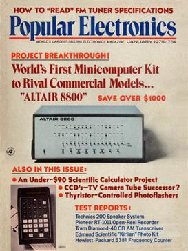
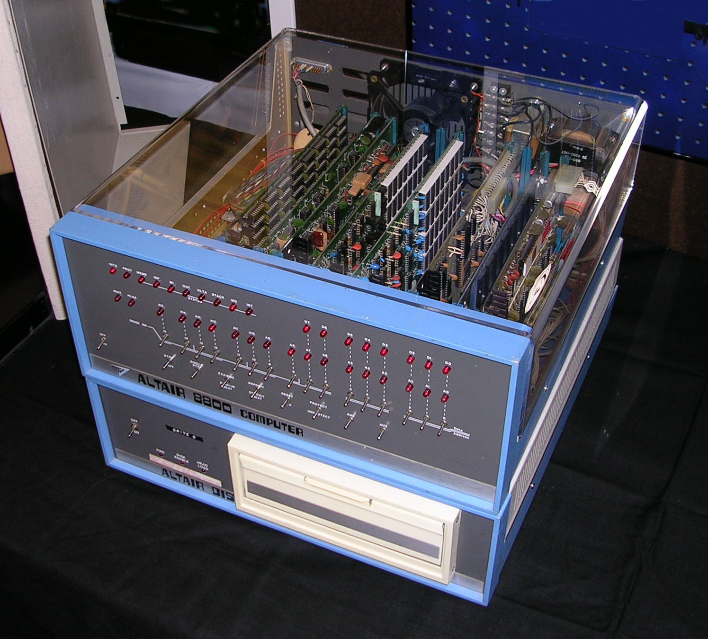
Paul Allen saw this magazine. He and Bill Gates wrote a BASIC programming language for the Altair — Microsoft's first product.
Now, the history. It begins with a magazine. In January 1975, Paul Allen saw a computer called the Altair 8800 on the cover of Popular Electronics. It had no screen and no keyboard — just switches and blinking lights!
He rushed to his friend Bill Gates, and together they wrote a programming language called BASIC for it. That became Microsoft's very first product.
Bill Gates and Paul Allen had met at Lakeside School in Seattle. On 4 April 1975 they founded Microsoft — from microcomputer software.
At a time when computers were giant machines owned by big companies, they had a bold dream: “a computer on every desk and in every home.” Windows is the reason that dream came true.
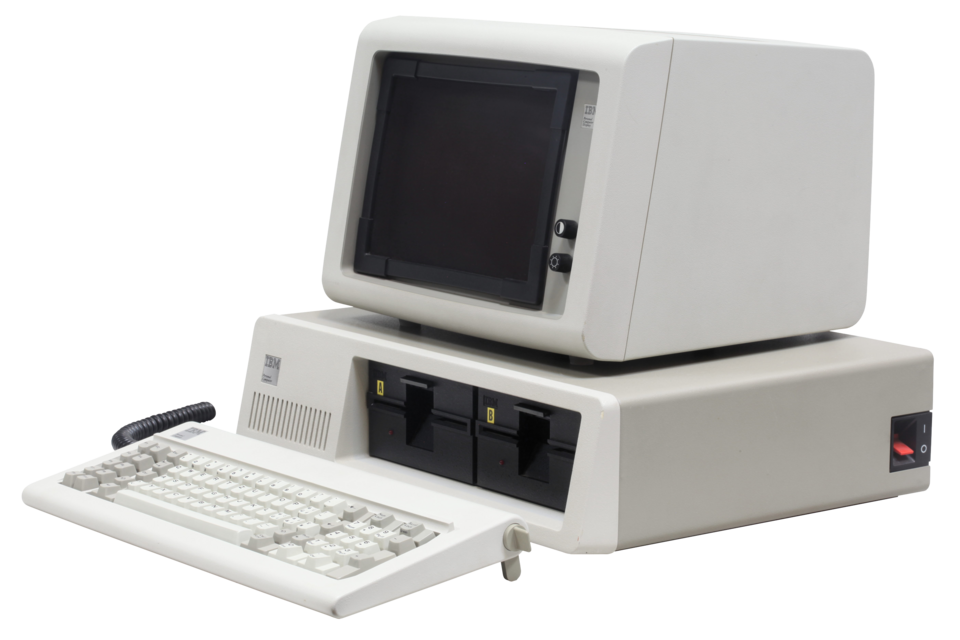
In 1981, the giant company IBM was building its first Personal Computer and needed an operating system. Microsoft bought a system called 86-DOS, improved it, and named it MS-DOS.
Here was the clever part: Microsoft kept the right to sell DOS to other computer makers too. Soon almost every PC in the world was running Microsoft software.
The WIMP idea: Windows, Icons, Menus, Pointer — invented at Xerox, made famous by Apple, spread worldwide by Microsoft.
But DOS was still a black screen. The idea of a friendly screen came from a research lab called Xerox PARC, whose Alto computer of 1973 had windows and a mouse.
This idea is called WIMP — Windows, Icons, Menus and Pointer. Apple made it famous with the Macintosh in 1984, and Microsoft spread it to the whole world.
On 20 November 1985, Windows 1.0 arrived — two years later than promised. It wasn't a complete operating system yet; it was a program that ran on top of MS-DOS.
Its windows were tiled — they couldn't overlap. But it came with Paint, Notepad and Calculator, and believe it or not, all three are still in Windows 11 today!
Windows 2.0, in 1987, finally let windows overlap. That's when trouble began.
In 1988, Apple sued Microsoft, saying Windows copied the “look and feel” of the Mac. The case went on for six years, and in 1994 the courts sided with Microsoft. It was one of the most famous tech battles ever.
Windows 3.0 in 1990 was the first huge hit, selling millions of copies. It was installed from a stack of floppy disks — Windows 3.11 needed nine!
And the games had a secret purpose. Solitaire trained people to drag with the mouse, and Minesweeper trained them to left-click and right-click. Training disguised as fun!
Here's a secret most people don't know: for years there were two Windows families. The home family — 95, 98 and ME — was built on old DOS. It was fun but crashed often.
The business family was called NT, for “New Technology”. A team led by Dave Cutler built a brand-new, strong kernel for it. In 2001, XP joined both families — and every Windows since then, including 11, runs on the NT kernel.
Windows 95 wasn't just software — it was an event. Its advert used the rock song “Start Me Up”, and people queued at midnight to buy it.
It introduced the Start button and taskbar, Plug and Play so new devices just worked, and long file names — up to 255 characters, when DOS allowed only 8!
Then the internet exploded. Windows 98 came with Internet Explorer built in — so most people never installed another browser.
The US government said Microsoft was using its monopoly — being almost the only choice — to unfairly crush competitors. This antitrust case lasted from 1998 to 2001 and ended with new rules Microsoft had to follow.
Windows XP, in 2001, brought the strong NT kernel to home users at last. Its colourful theme was called Luna.
Its wallpaper, “Bliss”, is a real photo taken by Charles O'Rear in California in 1996 — possibly the most-viewed photograph in history. XP was so popular that Microsoft supported it until 2014, almost 13 years.
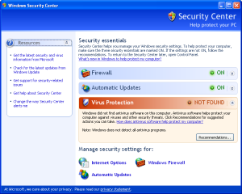
But being connected brought danger. In 2003, a worm called Blaster spread across millions of computers through the internet.
Microsoft fought back. Service Pack 2 for XP turned on a firewall — a wall that blocks attacks — and added the Security Center. Microsoft also began releasing fixes every month on Patch Tuesday, which still happens today.
Windows Vista, in 2007, looked stunning, with see-through glass windows called Aero. It was also safer, thanks to UAC — pop-ups that ask permission before a program makes changes.
But it needed powerful hardware and ran slowly on many computers. People were frustrated. The lesson: speed matters as much as looks.
Microsoft learned its lesson. Windows 7, in 2009, was built on Vista but made faster and lighter.
It added pinning apps to the taskbar and Snap — drag a window to the edge and it fills half the screen. It became one of the most-loved versions ever.
Then smartphones and tablets took over the world. Microsoft took a bold gamble: Windows 8, in 2012, was redesigned for touch screens, with big live tiles — and no Start button.
People using a mouse and keyboard were confused and upset. A year later, Windows 8.1 brought the Start button back. The lesson: always listen to your users.
Windows 10 arrived in 2015 — and yes, Microsoft skipped 9 to show it was a big leap. It was a free upgrade for Windows 7 and 8.1 users for its first year.
It changed how Windows is made: “Windows as a Service”. Instead of buying a new version every few years, it kept improving through updates over the internet. Its support ended on 14 October 2025.
Thousands
of engineers work on itTens of millions
of lines of codeWindows Insiders
millions of volunteers test early versions (since 2014)Patch Tuesday
fixes every month, on the 2nd TuesdayEvery feature is tested before it reaches over a billion computers.
How do you build something used by a billion people? Windows is written by thousands of engineers, and its code has tens of millions of lines — if you printed it, the pile of paper would be taller than a building!
Since 2014, millions of volunteers called Windows Insiders test new features early and report bugs. Then fixes reach everyone on Patch Tuesday, the second Tuesday of every month.
Windows 11 came in 2021 with a fresh look — a centred Start menu and rounded corners — plus Snap layouts to arrange windows neatly.
It needs a security chip called TPM 2.0, which protects passwords and keys, so some older computers can't upgrade. And it includes Copilot, an AI assistant built right in.
AI chips (NPU)
“Copilot+ PCs” (2024) have a special chip just for AICloud PC
Windows 365 streams a whole Windows computer over the internetTalk to your PC
ask Copilot in plain words instead of clicking menusFrom typing commands ⌨️ → clicking 🖱️ → touching 👆 → talking 🗣️
What comes next? Some new computers, called Copilot+ PCs, have a special chip — an NPU — made just for artificial intelligence.
With Windows 365, you can even stream a whole Windows computer from the cloud. Look at the pattern: first we typed, then we clicked, then we touched — and now we are starting to simply talk to our computers.
The “bits” decide how many memory addresses the computer can count.
Windows 11 is 64-bit only. Today's laptops often have 8–32 GB of RAM — impossible with 32-bit.
Now some computer maths! Memory is like a street of houses, and every house needs an address. A 32-bit computer can count 2 to the power 32 addresses — about 4.3 billion — so it can use only 4 GB of RAM.
A 64-bit computer can count 2 to the power 64 — about 18 billion billion addresses! That's why Windows 11 is 64-bit only, and laptops today can have 16 or 32 GB of RAM.
A path is a file's full address:
C:\Users\Priya\Documents\homework.docx| Extension | Type |
|---|---|
| .docx | 📄 Word document |
| .jpg / .png | 🖼️ Picture |
| .mp4 | 🎬 Video |
| .exe | ⚙️ Program (be careful!) |
Windows stores files using the NTFS file system.
How does Windows find a file among millions? It uses folders inside folders, like a tree. Every file has a path — its full address — like C:\Users\(my name)\Documents\homework.docx.
The letters after the dot are the extension: .docx is a document, .jpg a picture, .mp4 a video and .exe a program — be careful with those! Windows stores all this using the NTFS file system.
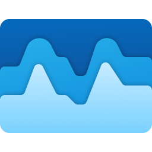
| Process | CPU | Memory |
|---|---|---|
| 🌐 Chrome | 12% | 850 MB |
| 🎮 Minecraft | 35% | 1,900 MB |
| 🎨 Paint | 1% | 60 MB |
| ⊞ Windows Explorer | 2% | 110 MB |
Want to see the operating system at work? Press Ctrl + Shift + Esc to open Task Manager.
It lists every running program, called a process, how hard the CPU is working, and how much memory each app uses. If an app freezes, you can click End task to close it.
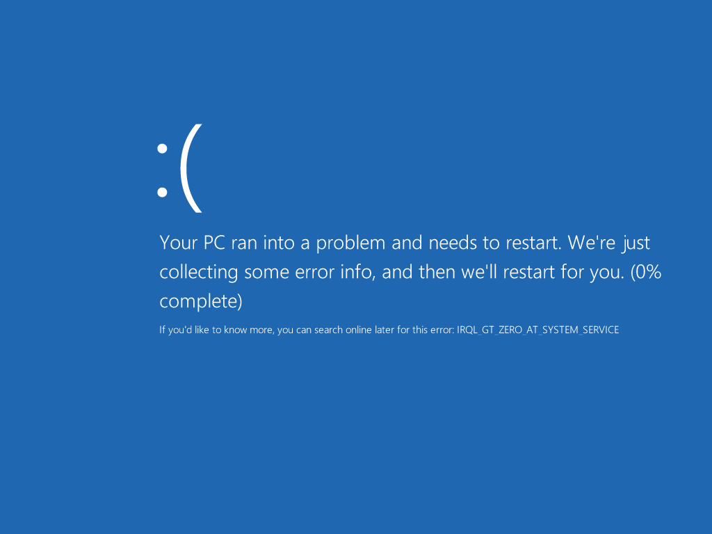
Sometimes things go very wrong. When Windows hits an error it cannot safely fix, it shows the famous Blue Screen of Death.
It sounds scary, but it actually stops everything on purpose to protect your files from damage. Since Windows 8 it shows a sad face :( — and in 2025, Windows 11 changed it to a simpler black screen.
Update
updates fix security holesAntivirus
Windows Security is built inStrong passwords
long, mixed, never sharedThink before clicking
unknown links & .exe filesBackup
keep copies of important files💡 Ask a grown-up before installing anything new!
So how do we stay safe? Five simple rules. One: always install updates — they fix security holes. Two: keep Windows Security, the built-in antivirus, switched on.
Three: use strong passwords and never share them. Four: think before clicking unknown links or .exe files. And five: back up important files. And of course — ask a grown-up before installing anything!
| OS | Made by | Found on | Special thing |
|---|---|---|---|
| ⊞ Windows | Microsoft | Most laptops & desktops (≈ 7 in 10) | Runs on PCs from many brands |
| 🍎 macOS | Apple | Mac computers | Only on Apple's own hardware |
| 🐧 Linux | Linus Torvalds (1991) + volunteers | Servers, supercomputers | Free and open source |
| 🌐 ChromeOS | Chromebooks in schools | Works mostly in the browser | |
| 📱 Android / iOS | Google / Apple | Phones & tablets | Made for touch |
Windows isn't alone. macOS by Apple runs only on Mac computers. Linux, started by Linus Torvalds in 1991, is free and open source and runs most of the world's servers and supercomputers.
ChromeOS powers Chromebooks, and phones use Android or iOS. But on laptops and desktops, Windows is the leader — about 7 out of 10.
ATMs
many cash machines run WindowsAirports
flight boards & check-in kiosksShops
billing countersHospitals
scanners and recordsXbox
its system is based on WindowsFactories
machines & control screensWindows isn't only on laptops. Next time you're out, look carefully! Many ATMs, airport flight boards, shop billing counters and hospital machines run Windows.
Even the Xbox game console runs a system based on Windows. Sometimes you can spot it when one of these screens shows an error message!
From a program on top of DOS 👉 to an AI-powered OS on over a billion devices
Let's look back at the whole journey. From Windows 1.0 in 1985 — a simple program on top of DOS — through the hits like 95, XP and 7, and the lessons of Vista and 8.
All the way to Windows 11 today: an AI-powered operating system on more than a billion devices. Every version, good or bad, taught Microsoft something.
Now let's test the experts in the room!
1. What is the core part of an OS called? (The kernel)
2. Why can 32-bit Windows use only about 4 GB of RAM? (2³² ≈ 4.3 billion addresses)
3. Which two families joined in XP? (The DOS-based home family and the NT family)
4. What does WIMP stand for? (Windows, Icons, Menus, Pointer)
5. Which shortcut opens Task Manager? (Ctrl + Shift + Esc)
Two friends had a dream of a computer on every desk — and they made it real. Maybe one of us will build the next big idea. Thank you for listening! Any questions?